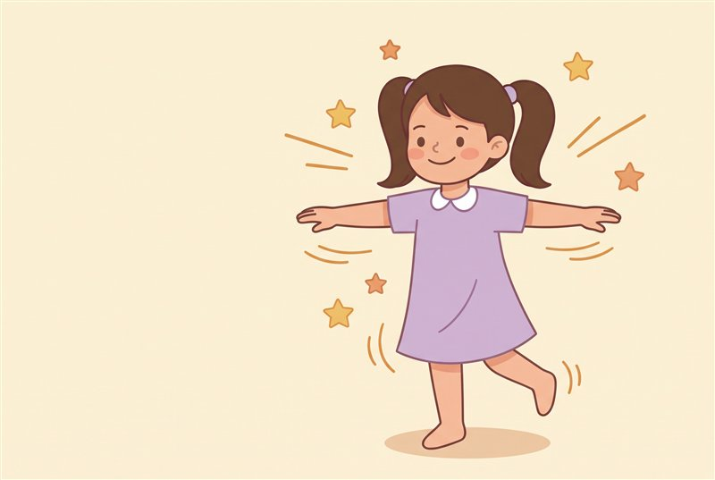
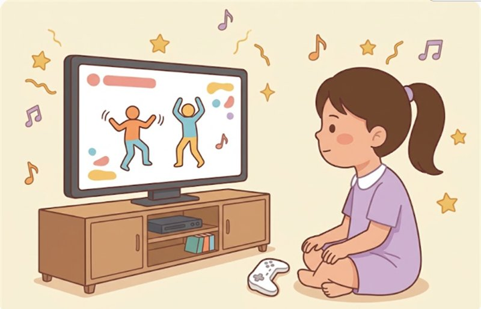
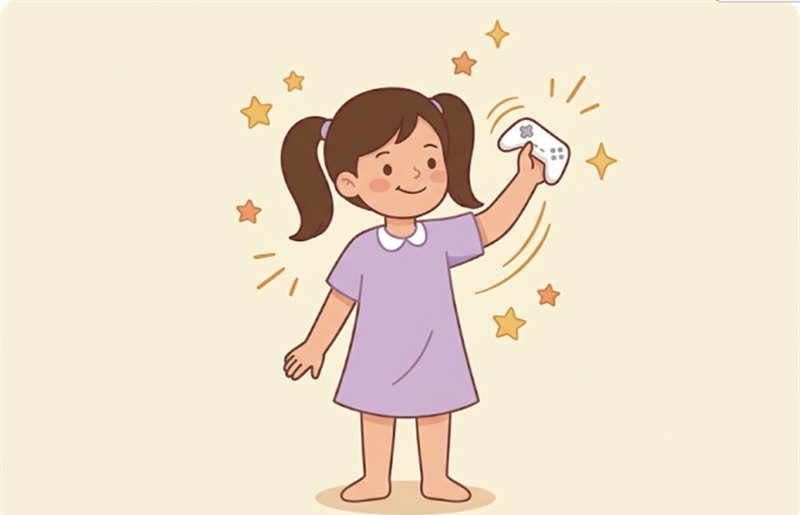
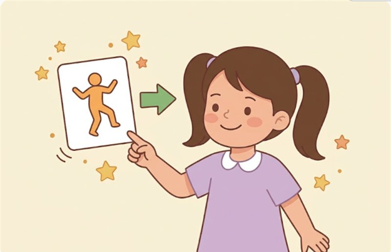
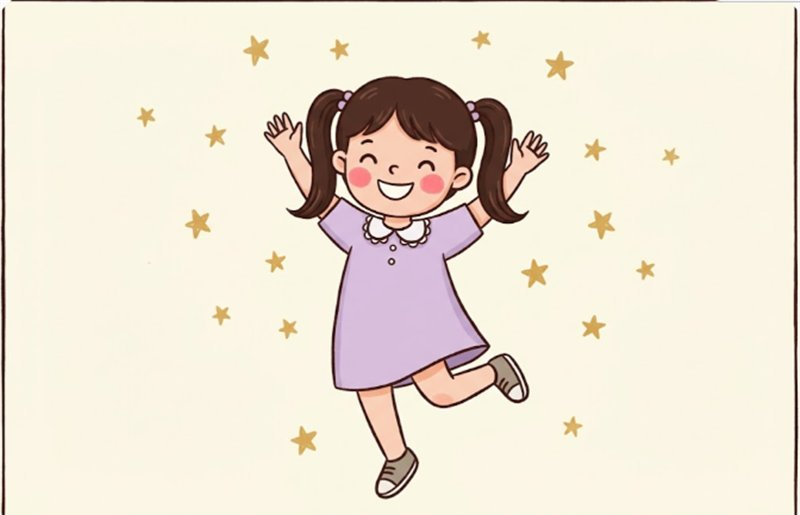
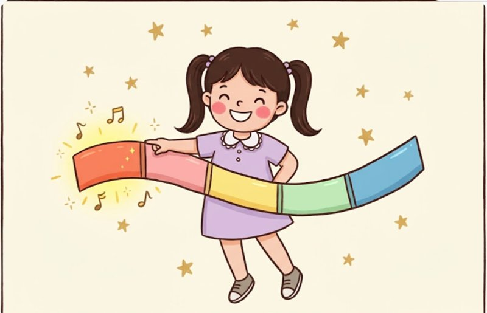
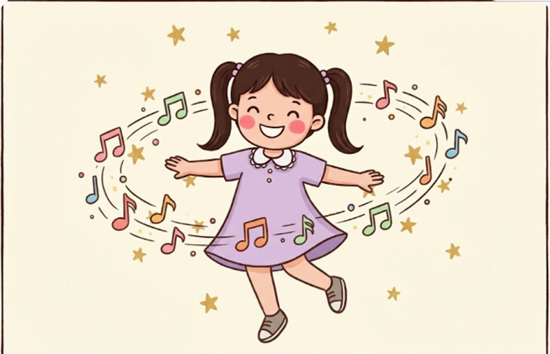
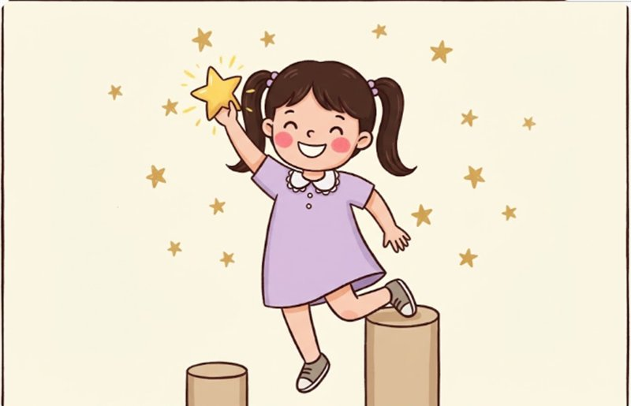
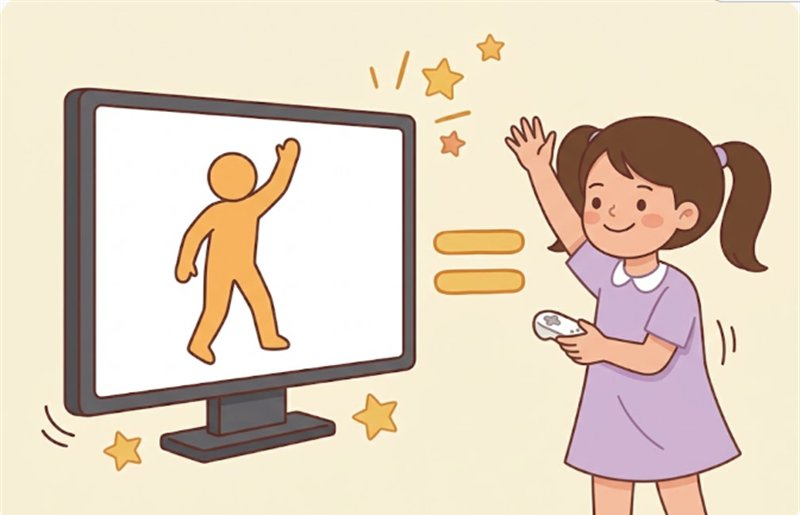
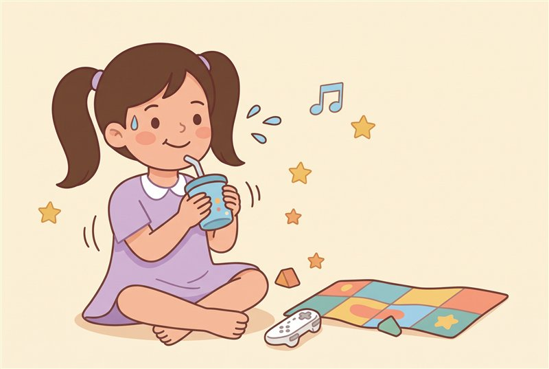

一步一步學跳舞
先練手，再加腳。
結論
眼睛看舞者，偷看小圖。
練習八步驟

先動一動
動動手，動動腳。

先看一次
坐著看舞者跳，一起數節拍。

只動手
先不用管腳。

看小圖
小圖會告訴你下一步。

加上腳
手跟腳一起動。

分段練習
一次只練一小段。

跟著音樂跳
音樂開始，從頭跳到尾。

再跳一次
看看有沒有比上次好。
跟著影片練習
請大人陪你一起看。
看 Baby Shark
Just Dance 2020
看 All Star
Just Dance 2026
更多影片
官方頻道
跳得開心最重要

跟自己比

互相教

玩累就休息
給家長看：依年紀調整的陪練方法
以下是根據遊戲設計和孩子學動作的經驗整理的建議，不是官方教學。
關於影片：連結都會開啟 YouTube 上 Just Dance 官方頻道的內容，影片可能只是歌曲片段。YouTube 可能顯示廣告和推薦影片，建議家長先看過並陪同觀看。
- 小一：一次只給一個重點，例如這首歌「手伸直」就好。家長可以站在旁邊一起跳，也可以說「照著鏡子跳」。
- 小三：可以開始練習邊看舞者邊瞄圖示，也可以請孩子當小老師，減少互相比較。
- 鼓勵方式：說得具體一點，例如「你剛剛的手舉得好高」，並記錄這次比上次進步多少。
- 時間：每次練 2 到 3 首就夠了，孩子還覺得好玩時就結束。